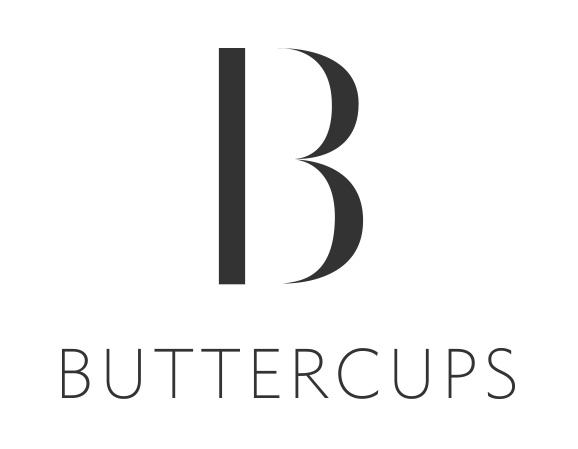

OUR STORY
India's a high-end lingerie boutique, Buttercups by Arpita Ganesh
February,2013
Arpita Ganesh believes that what you wear on the inside is as important as what you wear on the outside.
Getting a fix on Size
February,2014
This bra fitter helps women deal with a recurring problem by helping them find their correct size!
Why I care about the Right Bra Size and why you should too
February,2014
Arpita Ganesh's obsession about wanting women to wear the right size bra initiated her ballsy move to crowdfund her campaign.
On a mission to fit every woman with the perfect bra – Arpita Ganesh’s Buttercups
April,2014
Arpita has fit over 3000 women till date and NO ONE ever left without appreciating the “fitting” that helped them know their right bra size.
Overcoming the lingerie taboo
October,2012,
Changing mindsets, was and continues to be Arpita Ganesh's biggest challenge.
25 most read stories of Women Entrepreneurs in 2014
December,2014
These women entrepreneurs and leaders continue to inspire and motivate many.
Breaking the invisible barrier
January,2015
Arpita Ganesh, the changemaker who stood firm against the many challenges, stepped out of her comfort zone and pushed barriers to move ahead and seek success.
What you don't know about women entrepreneurs in India
June,2014
Interesting infographic about women entrepreneurs as they take the plunge and start up to follow their dreams and create lasting enterprises.
Get down to bras tacks
December,2014
A good quality bra is worth only 100 wears"says Arpita Ganesh, founder and CEO at Buttercups Bras Pvt Ltd.
An app that chooses your brassiere
February,2014
Women in India feel awkward talking about their underwear and would much rather buy one that does not fit over spending a few extra minutes at the dressing room finding the perfect fit.
Man's best friend is now the Chief Cuddling Officer,
July, 2015
A serious meeting is on. Targets are being tossed around, and spreadsheets revised. The young faces around the table are pensive. Then in walks Lady Maggie.
Indian Bra Queen is on a mission. Are you joining her?
January, 2014
Have you heard of Buttercups? It is arguably one of the most innovative lingerie boutiques (offline and online) in India currently.
Inspiring Stories Of Some Amazing Women Entrepreneurs Of The Indian Startup Ecosystem
November, 2015
Nothing could be truer for the women entrepreneurs of today who are chartering unknown territories unabashedly and fearlessly. Be it in ecommerce, education, investing, travel, fashion, retail, fitness, hiring, and anything and everything under the sun, they are proceeding with gumption and unbridled enthusiasm to change the world around them, make a difference with their ideas, seek solutions that have never been sought, fight diseases and social norms, run successful ventures and generate employment for many, and give rise to new sustainable ecosystems.
In Conversation with the owner of India’s Premier Lingerie Boutique
January, 2016
Arpita Ganesh talks of her journey as an entrepreneur and how Buttercups came into being.
Indian Bra Queen is on a mission. Are you joining her?,
January, 2016
Founder & CEO of Buttercups, Arpita's inspiring story of how she started Buttercups and how she got the title of Indian Bra Lady"
FLYING START - I had a tryst with near-bankruptcy, but persisted with my lingerie venture
April, 2016
Founder, CEO Arpita Ganesh talks of her journey as an entrepreneur.
Reasons why entrepreneurs fail.
April, 2016
Founder, CEO of Buttercups, Arpita Ganesh points out some of the common mistakes entrepreneurs make when starting a new venture.
Books That Inspired Successful Entrepreneurs
April, 2016
Founder, CEO, Arpita Ganesh on the book that inspired her the most.
Lingerie trends this summer.
April, 2016
Our founder, CEO Arpita Ganesh gives you lingerie tips for this summer.
Colourful Inside-out, Cry Out Bengaluru's Women
April, 2016
Our founder, CEO Arpita Ganesh shares her opinion on the choice of lingerie colours.
The New Family Holiday is All About Solo Trips With Children
April, 2016
Founder, CEO Arpita Ganesh talks about her solo trips with her 10 year old daughter.
Challenges faced by women entrepreneurs to raise funding.
May, 2016
Entrepreneurship was once considered a man’s territory, but with each passing year women are taking the plunge and leading their own enterprises. This however, does not come without its own challenges. As we already know, raising funds from an investor is a tough task for any business owner.
Now, family holidays are all about solo trips with children.
April, 2016
Meet The Pets Of Indiranagar Workspaces And Eateries, And Their Humans Too
May, 2016
Perfect Fittings From Buttercups For All Your Inner Woes
May, 2016
Things That Kept Me Motivated Throughout My Entrepreneurial Journey At Buttercups,
June, 2016
What I Learnt at a Bra Workshop: Keep Your Enemies Close and Your Bras Even Closer,
June, 2016
Buttercups in plans to expand in Tier I Cities,
July, 2016
Lingerie comes out of closet as it catches internet bug.,
July, 2016
How startups can use blogs to increase customer engagement,
July, 2016
How small town girl Aaditi Sinha went on to become the CTO of innovative lingerie brand Buttercups
July, 2016
Your bra is the hero of your wardrobe.,
July, 2016
How This Entrepreneur Got Her Business Model Right In Her Second Attempt,
July, 2016
The right fit!
June, 2016
THE INSIDER: WHAT’S NEW ABOUT BUTTERCUPS’ LINGERIE
July, 2016
Online Lingerie Brand Buttercups Raises Funding from Snapdeal’s ex-CPO Anand Chandrasekaran and Others,
August, 2016
She’s easing the burden on women by rejigging their bras – with help from a few good men.,
August, 2016
Buttercups raises funding from Snapdeal’s ex-CPO Anand Chandrasekaran and others,
August, 2016
Buttercups raises funding from Snapdeal’s ex-CPO Anand Chandrasekaran and others.
Online Lingerie Brand Buttercups Raises Funding From Snapdeal’s Ex-CPO Anand Chandrasekaran And Existing Investors,
August, 2016
Buttercups Intimates raises funds in pre-series A round,
August, 2016
Online Lingerie Brand Buttercups Gets Funding from Snapdeal’s ex-CPO Anand Chandrasekaran and Existing Investors,
August, 2016
Online Lingerie Brand Buttercups Raises Funds in pre-series A round,
August, 2016
Google encourages and empowers SMBs to harness the power of digital,
August, 2016
Google announced the winners of SMB Heroes 2017, an initiative aimed at recognizing businesses to have embraced tech to power their growth.
Former Snapdeal CPO invests in Buttercups Intimates and education technology firm Makkajai
August, 2016
Snapdeal’s ex-CPO Anand Chandrasekaran invests in online Lingerie brand Buttercups,
August, 2016
Snapdeal’s ex-CPO invests in online lingerie brand Buttercups,
August, 2016
Lingerie e-tailer Buttercups gets funding from former Snapdeal exec Chandrasekaran, others,
August, 2016
Buttercups raises fresh round of funds from Anand Chandrasekaran and existing investors.,
August, 2016
Buttercups raises funds.
August, 2016
Cuberoot Technologies, Buttercups & salebhai.com raise funding.
August, 2016
Lingerie Brand Buttercups Raises funding
August, 2016
Former Snapdeal CPO invests in Buttercups and Makkajai,
August, 2016
Snapdeal's Ex-CPO's Investment to Help Buttercups Develop Multi-channel Customer Engagement Platform,
August, 2016
Buttercups Aims to Bring New Collections Every 3 Months,
August,2 016
Finding a bra that fits your breast and budget.,
September, 2016
A ‘fitting’ boost to your confidence.,
September, 2016
Why bra is the most important piece in your wardrobe,
September, 2016
Is word of mouth dead or alive in this day and age? ,
September, 2016
10 Founders Share How They Avoid Entrepreneurial Burnout,
2016-12-22
SMB Heroes 2017, Arpita Ganesh Among Winners of Digital Unlocked
July, 2017
As a part of its Digital Unlocked campaign that is aimed to digitally empower small and medium businesses (SMBs) in the country, Google India announced the winners of SMB Heroes 2017. SMB Heroes, an initiative launched earlier this year, is aimed at recognising businesses that have embraced technology to power their growth.
Google encourages and empowers SMBs to harness the power of digital,
July, 2017
Google announced the winners of SMB Heroes 2017, an initiative aimed at recognising businesses to have embraced tech to power their growth.
Google salutes SMB Heroes, India’s small businesses that have leveraged the power of digital
July, 2017
Tech giant Google, which is empowering thousands of Indian SMBs with essential digital skills with its Digital Unlocked initiative, recognised small businesses that have embraced technology to power their growth.
Buttercups: All for the right fit
August, 2017
For entrepreneur Arpita Ganesh, founder of Buttercups, lingerie is more than just a product with everyday utility quotient. It’s a pathway for empowering women with a healthy body image. Winner of Google SMB Heroes 2017 award for impacting change through digital technology, the Bengaluru-based startup states this vision: “For every woman to be comfortable and happy with her body."
Google reaffirms commitment to digitally empower small and medium businesses
July, 2017
Google India reaffirmed its commitment to digitally empower small and medium businesses by recognizing business leaders who have embraced technology to power growth,
Path to The Right Fit: Buttercups Intimates
March, 2018
A childhood love for entrepreneurship and a chance holiday encounter helped Arpita Ganesh find her passion. Follow her fascinating story from ideation to a fast growing start up.